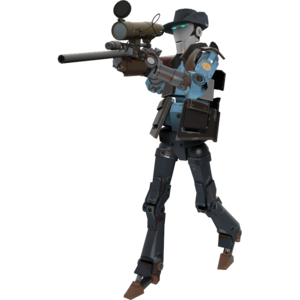

Welcome to the TFBot Page!

TFBots are the name labelled for the fake players inserted in place of real players in offline matches.
They are designed to play as human as a bot can, with tons of behaviors and difficulty tweaks.
A lot of my technical fascinations with programming and coding came from analyzing the behaviors of these bots.
I would say most of my passion actually comes from the idea of making bots that play almost like humans can.
The idea overall is very fun to me and is partly why I like this game as well.
The names given to these TFBots are typically based from inside jokes from Valve's other games or something original to Team Fortress 2 itself.
You can check out the official Wikipedia page for all the TFBot names here.
TFBot Names I Like
This is a list of names that the game will give to bots that you can play against offline.
The names are based on previous games by Valve or inside jokes within TF2 itself:
- A Professional With Standards
- Ribs Grow Back
- One-Man Cheeseburger Apocalypse
- Hat-Wearing MAN
- Big Mean Muther Hubbard
- Screamin' Eagles